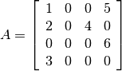

The API can be used to extend CVXOPT with interfaces to external C routines and libraries. A C program that creates or manipulates the dense or sparse matrix objects defined in CVXOPT must include the cvxopt.h header file in the src directory of the distribution.
Before the C API can be used in an extension module it must be initialized by calling the macro import_cvxopt. As an example we show the module initialization from the cvxopt.blas module, which itself uses the API:
#if PY_MAJOR_VERSION >= 3
static PyModuleDef blas_module = {
PyModuleDef_HEAD_INIT,
"blas",
blas__doc__,
-1,
blas_functions,
NULL, NULL, NULL, NULL
};
PyMODINIT_FUNC PyInit_blas(void)
{
PyObject *m;
if (!(m = PyModule_Create(&blas_module))) return NULL;
if (import_cvxopt() < 0) return NULL;
return m;
}
#else
PyMODINIT_FUNC initblas(void)
{
PyObject *m;
m = Py_InitModule3("cvxopt.blas", blas_functions, blas__doc__);
if (import_cvxopt() < 0) return ;
}
#endif
As can be seen from the header file cvxopt.h, a matrix is essentially a structure with four fields. The fields nrows and ncols are two integers that specify the dimensions. The id field controls the type of the matrix and can have values DOUBLE, INT, and COMPLEX. The buffer field is an array that contains the matrix elements stored contiguously in column-major order.
The following C functions can be used to create matrices.
Returns a matrix object of type id with nrows rows and ncols columns. The elements of the matrix are uninitialized.
Returns a copy of the matrix src converted to type id. The following type conversions are allowed: 'i' to 'd', 'i' to 'z', and 'd' to 'z'.
Creates a matrix of type id from the Python sequence type x. The returned matrix has size (len(x), 1). The size can be changed by modifying the nrows and ncols fields of the returned matrix.
To illustrate the creation and manipulation of dense matrices (as well as the Python C API), we show the code for the cvxopt.uniform function described in the section Randomly Generated Matrices.
PyObject * uniform(PyObject *self, PyObject *args, PyObject *kwrds)
{
matrix *obj;
int i, nrows, ncols = 1;
double a = 0, b = 1;
char *kwlist[] = {"nrows", "ncols", "a", "b", NULL};
if (!PyArg_ParseTupleAndKeywords(args, kwrds, "i|idd", kwlist,
&nrows, &ncols, &a, &b)) return NULL;
if ((nrows<0) || (ncols<0)) {
PyErr_SetString(PyExc_TypeError, "dimensions must be non-negative");
return NULL;
}
if (!(obj = Matrix_New(nrows, ncols, DOUBLE)))
return PyErr_NoMemory();
for (i = 0; i < nrows*ncols; i++)
MAT_BUFD(obj)[i] = Uniform(a,b);
return (PyObject *)obj;
}
Sparse matrices are stored in compressed column storage (CCS) format. For a general nrows by ncols sparse matrix with nnz nonzero entries this means the following. The sparsity pattern and the nonzero values are stored in three fields:
For example, for the matrix

the elements of values, rowind, and colptr are:
It is crucial that for each column the row indices in rowind are sorted; the equivalent representation
is not allowed (and will likely cause the program to crash).
The nzmax field specifies the number of non-zero elements the matrix can store. It is equal to the length of rowind and values; this number can be larger that colptr[nrows], but never less. This field makes it possible to preallocate a certain amount of memory to avoid reallocations if the matrix is constructed sequentially by filling in elements. In general the nzmax field can safely be ignored, however, since it will always be adjusted automatically as the number of non-zero elements grows.
The id field controls the type of the matrix and can have values DOUBLE and COMPLEX.
Sparse matrices are created using the following functions from the API.
Returns a sparse zero matrix with nrows rows and ncols columns. nzmax is the number of elements that will be allocated (the length of the values and rowind fields).
Returns a copy the sparse matrix var{src}.
Creates a sparse matrix with nrows rows and ncols columns from a triplet description. I and J must be integer matrices and V either a double or complex matrix, or NULL. If V is NULL the values of the entries in the matrix are undefined, otherwise they are specified by V. Repeated entries in V are summed. The number of allocated elements is given by nzmax, which is adjusted if it is smaller than the required amount.
We illustrate use of the sparse matrix class by listing the source code for the real method, which returns the real part of a sparse matrix:
static PyObject * spmatrix_real(spmatrix *self) {
if (SP_ID(self) != COMPLEX)
return (PyObject *)SpMatrix_NewFromMatrix(self, 0, SP_ID(self));
spmatrix *ret = SpMatrix_New(SP_NROWS(self), SP_NCOLS(self),
SP_NNZ(self), DOUBLE);
if (!ret) return PyErr_NoMemory();
int i;
for (i=0; i < SP_NNZ(self); i++)
SP_VALD(ret)[i] = creal(SP_VALZ(self)[i]);
memcpy(SP_COL(ret), SP_COL(self), (SP_NCOLS(self)+1)*sizeof(int_t));
memcpy(SP_ROW(ret), SP_ROW(self), SP_NNZ(self)*sizeof(int_t));
return (PyObject *)ret;
}